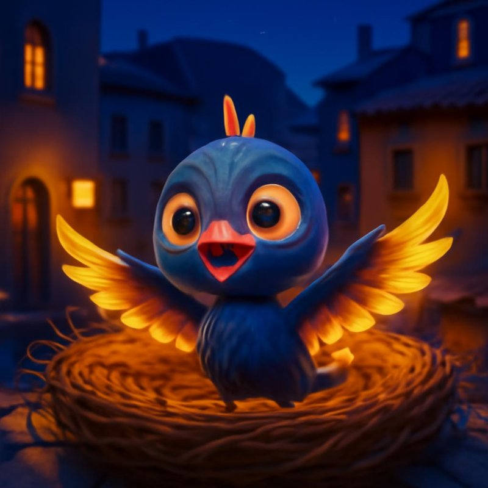

Fias Welt · am AbendFias NestRuhig werden und einschlafen mit FiaDrei Fragen
So beginnt jede Stunde im Körperkosmos. Tipp an, was passt. Es gibt kein Richtig.
1 · Was ist gerade?
2 · Was braucht es gerade?
3 · Was brauchst du?
Eine Karte ziehen
Ein Spiegel und ein Krafttier. Die Karte sagt nichts voraus. Die Bedeutung findest du: Was fällt dir dazu ein?
Frag Fia
Zum Beispiel «Nacken», «Angst», «Atem», «Schlaf» oder «Löwe». Fia sucht im Körperkosmos-Wissen. Mit Sense Engine antwortet sie frei.
Körperkosmos hat drei Teile
Der dritte Teil sind die Schulungen (unter «Wissen»).
Was Fia sich merkt
Nur Zahlen, nur auf diesem Handy. Keine Texte, keine Stimme, keine Bilder.
📓 Mein Spür-Buch
Deine Antworten und gemerkten Karten. Bleibt auf diesem Handy.
Ein Atemzug, fünf Elemente
«So wie wir die Welt wahrnehmen, so atmen wir. Und so wie wir atmen, so spürt und entwickelt sich unser Körper.»
Einatmung setzt ein · Fülle · Wendepunkt · Ausatmung · Pause
Die Kugel zeigt nur einen Rhythmus. Atme so, wie es für dich passt.
Wo wird es weich?
Die Frage der Methode: In welcher Phase des Atems wird ein Gewebe weich? Probier es an dir:
- Leg beide Hände seitlich an die unteren Rippen, ohne Druck.
- Drei, vier Atemzüge zuschauen, nichts verändern.
- Wird es unter den Händen beim Einatmen weicher oder beim Ausatmen?
- Wenn nichts kommt: einmal voll einatmen, dann einmal lang ausatmen. Nur je einmal.
Ein Bild zum Spüren, keine Aussage über dich. In der Praxis liest Diego das mit den Händen an vielen Stellen des Körpers.
Die Kette der Diaphragmen
Vier quer liegende Böden tragen dich, von unten nach oben. Zusammen bilden sie die Schwerkraftlinie.
Die Öffnung
«Erst wenn der Mensch offen ist, kann Veränderung entstehen.»
Der Atem findet seinen Rhythmus, das Herz wird weit, das Gewebe wird weich. Dann braucht es nur einfache Worte: «Lass es kommen.» «Was braucht es gerade?» «Es darf weit werden.»
Körper fragen
Wo spürst du gerade etwas? Tipp die Stelle an. Fia zeigt dir das Thema, das in der Methode dazugehört, und eine Frage.
Mein Zeichen
Dein Geburtstag (nur Tag und Monat). Fia zeigt dir dein Sonnenzeichen mit Thema, Fragen und Übungsreihe. Bleibt nur auf diesem Handy.
Die zwölf Zeichen
Zeichen, Organ aus der chinesischen Tradition, Planet, Element, Thema, Fragen, Satz und eine Reihe von zwei Minuten.
Übungsreihen mit Fia
Jede Reihe hat fünf Schritte: wecken, öffnen, loslassen, bewegen, nachspüren. Etwa zwei Minuten. Davor und danach fragt Fia, wie es dir geht (0 bis 10).
Die fünf Spiegel
Das Herz der Methode. Jedes Element zeigt dir etwas wie ein Spiegel, und jedes stellt eine Frage. Die Antwort findest du selbst. Niemand deutet für dich.
Töne summen
Jedes Element hat einen Ton der Fünftonleiter und einen Laut. Summen «Mmm» ist der sanfteste Einstieg: Stimme ohne Worte, Füsse am Boden.
Tipp ein Element an: Das Handy spielt den Ton leise, du summst mit.
Der Elementefluss
Alle fünf Elemente in einer Bewegung: wachsen, öffnen, wiegen, fallen lassen, ankommen. Fliessend, leicht, am Ende geerdet. Drei bis fünf Kreise genügen.
Krafttiere
Das Krafttier gibt einem Thema ein Bild. Hier die Tiere der fünf Elemente.
Das Wissen im Körperkosmos
Körperkosmos verbindet Körperarbeit (Strukturelle Integration, Kinesiologie), die fünf Elemente der chinesischen Tradition und die Bilder der Sternkunde. Zwei Säulen, eine Methode: der Atem liest den Körper, die Spiegel sagen, was sich zeigt.
Einstellungen
Die Bilder stammen aus der Überlieferung (chinesische Tradition, Sternkunde) und aus Diegos Praxis (Strukturelle Integration, Kinesiologie). Sie sind ein Gesprächs- und Spürwerkzeug, keine Diagnose und kein Heilversprechen, und ersetzen keine Behandlung. Bei Schmerz oder Schwindel: Übung beenden. Notfall 144 · Reden hilft 143.